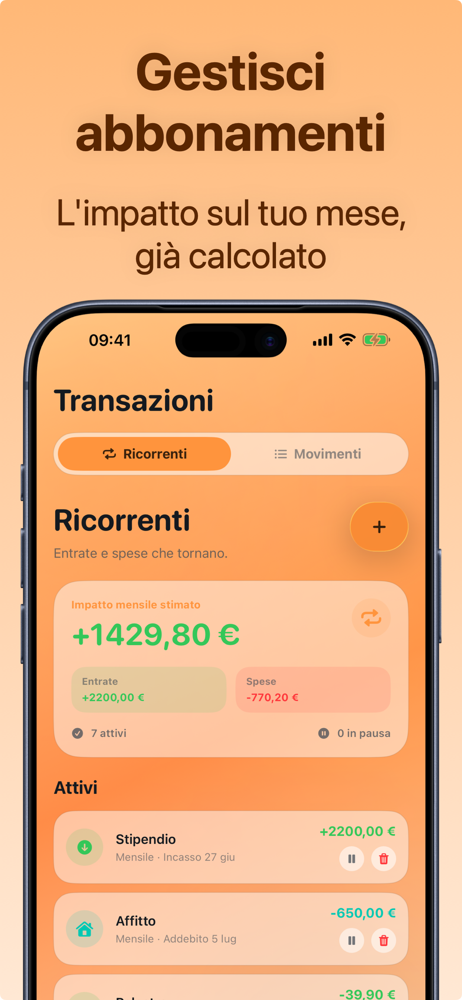

Gestire gli abbonamenti (e tagliare quelli che non usi)
Gli abbonamenti sono la spesa perfetta per passare inosservata: piccoli importi, addebito automatico, nessuna decisione attiva. Per questo sono anche il posto migliore dove recuperare soldi: 10 minuti di audit valgono spesso 200-400€ l'anno.
Il costo vero: pensa all'anno, non al mese
Il prezzo mensile è studiato per sembrare piccolo. Moltiplica per 12 e cambia tutto:
| Abbonamento | Al mese | All'anno |
|---|---|---|
| Streaming video | 12,99€ | 155,88€ |
| Musica | 10,99€ | 131,88€ |
| Cloud | 2,99€ | 35,88€ |
| Palestra | 39,90€ | 478,80€ |
| Totale | 66,87€ | 802,44€ |
E questa è una lista corta: aggiungi app, giornali, box in abbonamento, e il totale annuo supera facilmente lo stipendio di un mese.
L'audit in 3 passi (10 minuti)
- Censisci tutto. Scorri gli ultimi 2 estratti conto e gli abbonamenti in App Store/Google Play: scrivi ogni addebito ricorrente, anche i micro-importi.
- Per ognuno chiediti: l'ho usato nelle ultime 4 settimane? No → disdici oggi (non "a fine periodo": ora, tanto resta attivo fino alla scadenza). Sì ma poco → valuta il piano inferiore o la condivisione familiare.
- Metti i sopravvissuti sotto sorveglianza. Registrali in un unico posto con la data di rinnovo: la maggior parte degli abbonamenti inutili sopravvive perché nessuno li vede mai tutti insieme.

Il trucco che li tiene sotto controllo per sempre
Un audit una tantum aiuta, ma gli abbonamenti ricrescono (prove gratuite che diventano a pagamento, aumenti di prezzo silenziosi). La soluzione è strutturale: ogni nuovo abbonamento va registrato come spesa ricorrente nel momento in cui lo attivi. Così il totale mensile è sempre davanti ai tuoi occhi, e l'aumento di prezzo di 2€ non passa più inosservato.
Come gestire gli abbonamenti con Crena
- Apri Transazioni → Ricorrenti e inserisci ogni abbonamento con importo e giorno di addebito (Netflix il 12, Spotify il 12, palestra il 1°…).
- Crena mostra subito l'impatto mensile stimato: totale entrate ricorrenti, totale spese ricorrenti e saldo.
- Alla scadenza, l'addebito si registra da solo nel mese: niente da ricordare.
- Vuoi capire quanto pesa una disdetta? Metti in pausa l'abbonamento in Crena e guarda come cambia l'impatto mensile.
- Una volta al mese, scorri la lista: se un servizio non l'hai usato, disdicilo e cancellalo (o pausalo) anche qui. Il piano gratuito include fino a 3 ricorrenti; con Premium sono illimitati.
Domande frequenti
Come trovo gli abbonamenti che ho dimenticato?
Meglio disdire subito o aspettare la scadenza?
Crena disdice gli abbonamenti al posto mio?
Prova Crena gratis
Spese in due secondi, budget mensile e statistiche chiare. Senza registrazione e senza collegare il conto.
Scarica suApp Store